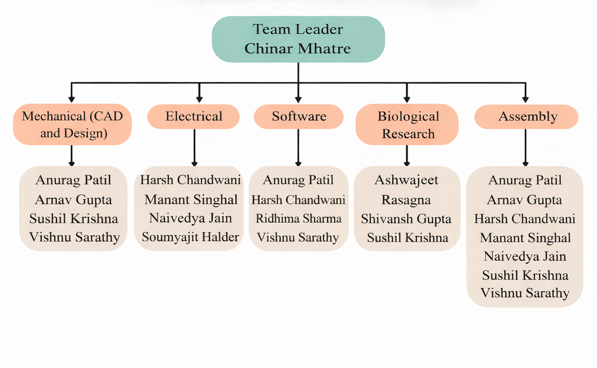
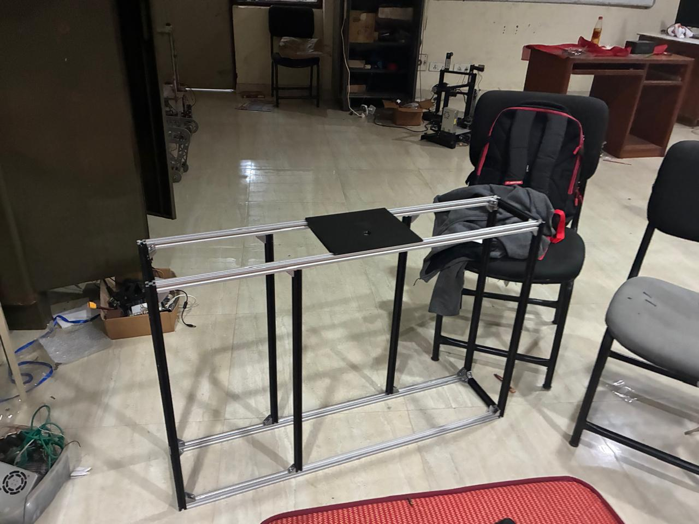
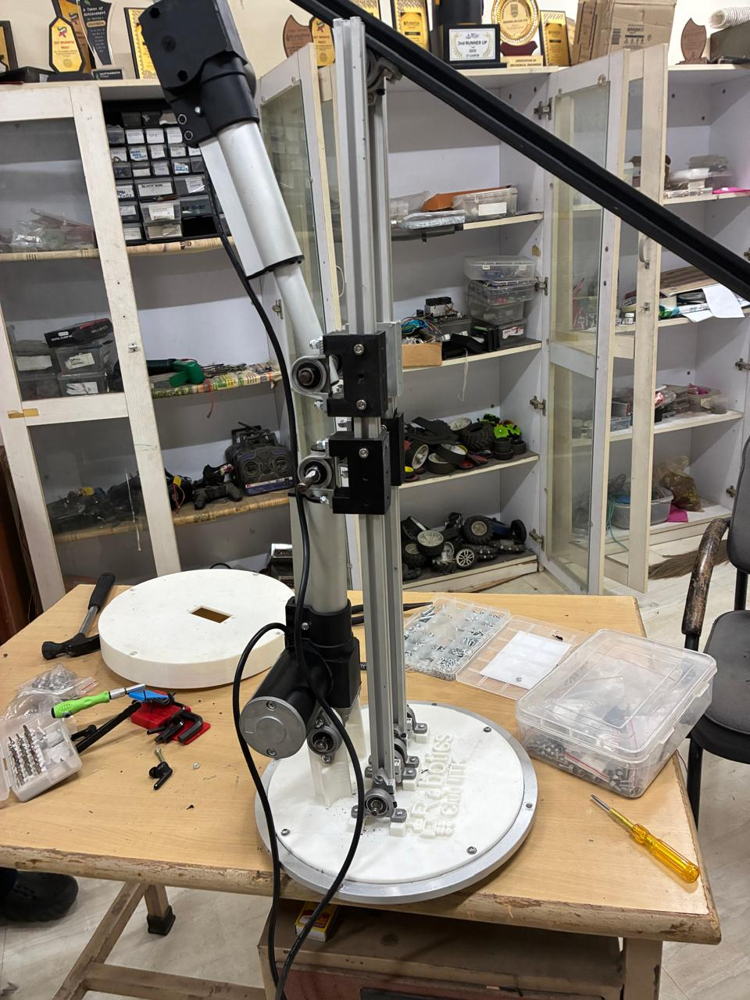
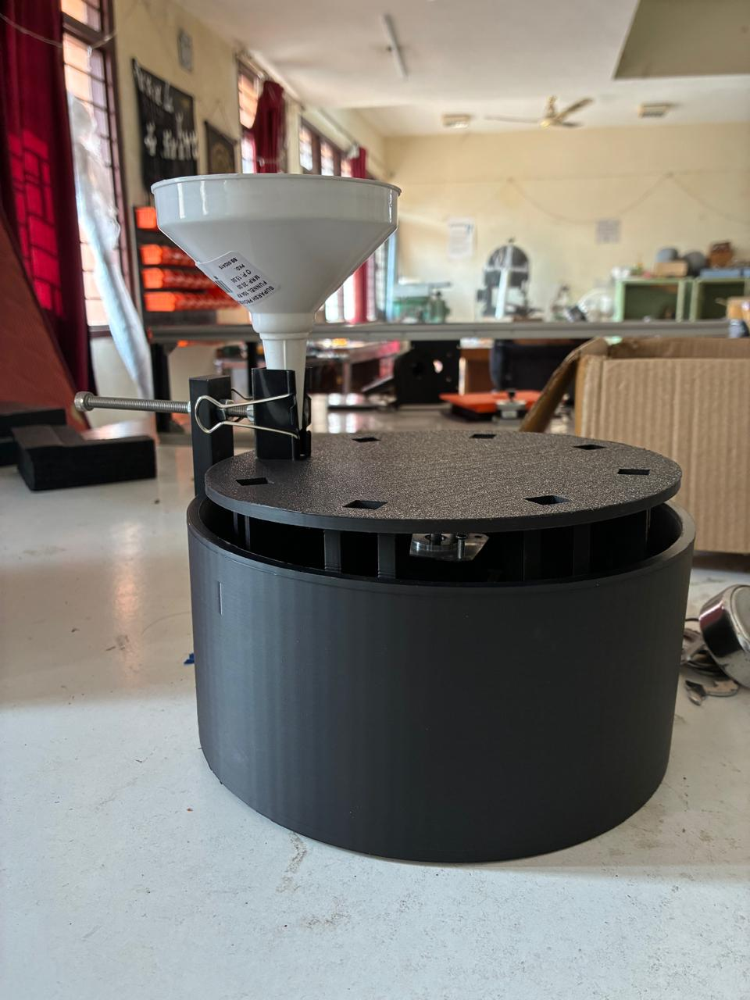

About the Challenge
The International Rover Challenge (IRC) is a global student space-robotics competition
that simulates real Mars-mission tasks. IRC 2026 challenges teams to design and operate
robust, reliable rovers capable of navigation, manipulation, and scientific exploration
in harsh terrain.
Our Vision & Mission
Our vision is to build a dependable, modular, and field-ready rover inspired by real
planetary exploration systems. The rover is designed to be reliable, easy to maintain,
and capable of performing all IRC 2026 missions with stability and safety.
The Rover
The rover uses a rocker-bogie based mobility system driven by six motors, providing
stability over uneven terrain. A carbon-fiber backbone ensures strength while keeping
weight low. The design emphasizes modularity and ease of maintenance.
Subsystems
Mechanical & Mobility
Differential-bar rocker-bogie suspension, carbon-fiber structural members,
bearing-supported joints, and modular chassis design.
Robotic Arm & Gripper
A 6-DOF arm with linear actuators and stepper-driven gripper capable of lifting
heavy payloads while maintaining balance and reach.
Biological System
Soil analysis using spectrophotometry and labile carbon testing to detect biological
signatures, with planned protein-based assays for future work.
Electronics & Communication
Multi-rail power system, distributed microcontroller architecture, long-range
telemetry, GPS, IMU feedback, and redundant 5.8 GHz FPV video.
Team Structure

The team consists of students from multiple departments, organized into Mechanical,
Electronics, Software, and Systems Integration sub-teams. This structure ensures parallel
development and reliable system integration.
Gallery



